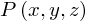
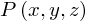

In [1]:
from proveit import Function, ExprList
from proveit.logic import Forall
from proveit.number import Less, Add
from proveit._common_ import x, y, z, P, Px, Pxy, Pxyz
%begin universal_quantification
The Material Below is Partly Excerpted from the “Specializing multiple levels simultaneously” Section of tutorial05_forall Notebook¶
When Forall operations are nested, the universal quantifications may be specialized separately.
Consider, for example, the nested quantification expression $\forall_x [\forall_y [\forall_{z|z<(x+y)} P(x, y, z)]]$, defined below:
In [2]:
nestedForall = Forall(x, Forall(y, Forall(z, Pxyz, conditions=[Less(z, Add(x, y))])))
Out[2]:
nestedForall: 
In the original tutorial05_forall notebook, we then successively specialize to reach the inner-most instance-defining variable $z$.
If we omit these specialize() method calls, we get no error in the final specialize() attempt on the altNestedForAll object defined afterward.
In [3]:
# when uncommented, the following specialize() method call causes
# the last input cell in the notebook to give a TypeError,
# which then resolves itself with repeated entry
nestedForallSpec1 = nestedForall.specialize(assumptions=[nestedForall])
Out[3]:
nestedForallSpec1:  ⊢
⊢ 
⊢ In [4]:
# when uncommented, the following increases (usually) the number of times
# the last input cell in the notebook must be "input" before the error resolves itself
# nestedForallSpec2 = nestedForallSpec1.specialize()
In [5]:
# define an alternative to the nestedForall object
altNestedForall = Forall([x, y, z], Pxyz, conditions=[Less(z, Add(x, y))])
Out[5]:
altNestedForall: 
In [6]:
# attempt to specialize ---
# this is where the TypeError initially appears
# but will resolve itself with repeated (1–2 additional) attempts to enter
altNestedForall.specialize(assumptions=[altNestedForall, Less(z, Add(x, y))])
Out[6]:
 ⊢ 
⊢ 
In [7]:
%end universal_quantification